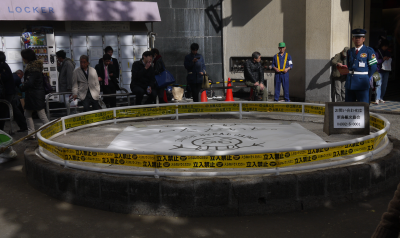

渋谷の「モヤイ像」、ルパン三世に盗まれる？ 37
ストーリー by hylom
大変なものを盗んでいきました……あなたの待ち合わせ場所です、 部門より
大変なものを盗んでいきました……あなたの待ち合わせ場所です、 部門より
あるAnonymous Coward 曰く、
東京・渋谷駅のすぐそばにあり、待ち合わせの目印としても知られる「モヤイ像」が、忽然と姿を消した。モヤイ像があった場所には、ルパン三世からの「モヤイはいただいた」との犯行声明が残るのみになっている。
といっても、本当にルパン三世がモヤイ像を盗っていった訳ではなく、『アニメ「ルパン三世」ファンと企業などが「暗いニュースが目立つ日本に愉快な話題を」と企画した。来年二月まで、各地のお宝を“盗んでいく”計画だ』とのことらしい。
モヤイ像を"盗っていく"、現場をぜひ見たかった……
ちなみにこれを企画したLUPIN STEAL JAPAN PROJECTでは、「あなたがルパンに盗んで欲しいモノ」の入力フォームが用意されている。

お約束 (スコア:5, おもしろおかしい)
> ちなみにこれを企画したLUPIN STEAL JAPAN PROJECTでは、「あなたがルパンに盗んで欲しいモノ」の入力フォームが用意されている。
"私の心"という入力が殺到する予感。
#盗めるもんなら、盗んでみろい